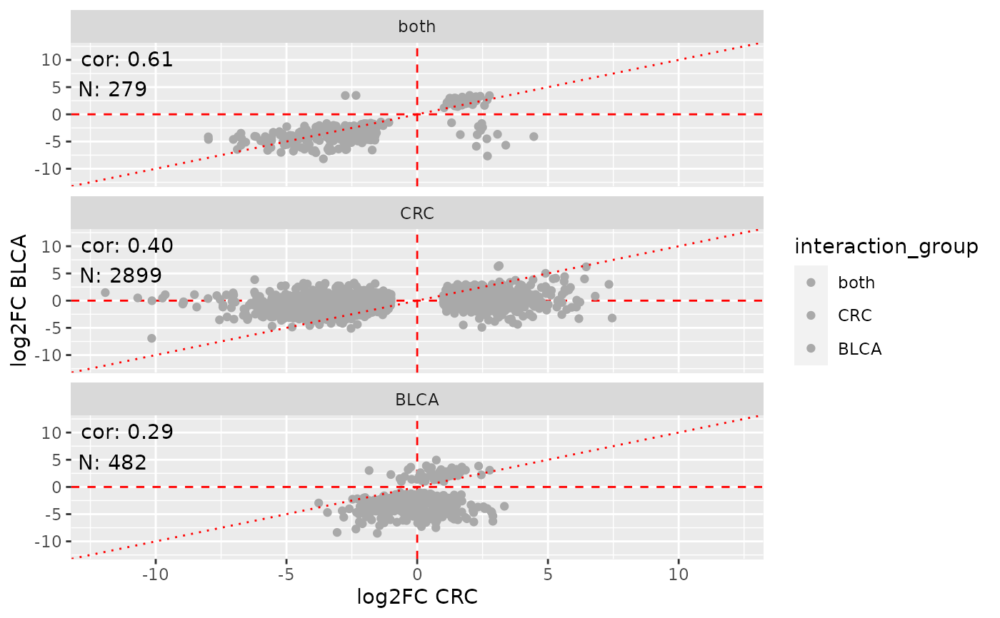

R/fdge.R, R/fdge-compare.R, R/fdge-interact.R
fdge.RdUse flm_def() to define the design matrix and contrast to test and
pass the FacileLinearModelDefinition object returned from that to fdge()
to run the desired differential testing framework (dictated by the method
parameter) over the data. flm_def accepts a
fdge( x, assay_name = NULL, method = NULL, features = NULL, filter = "default", with_sample_weights = FALSE, ..., verbose = FALSE ) # S3 method for FacileAnovaModelDefinition fdge( x, assay_name = NULL, method = NULL, features = NULL, filter = "default", with_sample_weights = FALSE, ..., verbose = FALSE ) # S3 method for FacileTtestDGEModelDefinition fdge( x, assay_name = NULL, method = NULL, features = NULL, filter = "default", with_sample_weights = FALSE, treat_lfc = NULL, ..., verbose = FALSE ) # S3 method for FacileLinearModelDefinition fdge( x, assay_name = NULL, method = NULL, features = NULL, filter = "default", with_sample_weights = FALSE, treat_lfc = NULL, weights = NULL, with_box = FALSE, ..., trend.eBayes = FALSE, robust.eBayes = FALSE, verbose = FALSE ) # S3 method for FacileTtestAnalysisResult compare(x, y, treat_lfc = NULL, rerun = TRUE, ...) # S3 method for FacileTtestAnalysisResult report( x, type = c("dge", "features"), ntop = 200, max_padj = 0.1, min_logFC = 1, features = NULL, highlight = NULL, round_digits = 3, event_source = "A", webgl = TRUE, caption = NULL, ... )
| x | a data source |
|---|---|
| assay_name | the name of the assay that holds the measurements for test.
Defaults to |
| method | The differential testing framework to use over the data. The
valid choices are defined by the type of assay |
| features | Explicitly request the features to test. If this is provided,
then the |
| filter, with_sample_weights | Passed into |
| ... | passed down into inner methods, such as |
| weights | a |
| rerun | When comparing two results, the features analyzed in each may
differ, making comparisons between the two objects sparse, at times.
When |
The appropriate statistical framework to use for differential expression
testing is defined by the type of data that is recorded in the assay
assay_name, ie. assay_info(x, assay_name)$assay_type.
The fdge_methods() function returns a tibble of appropriate
assay_type -> dge_method associations. The first entry for each
dge_method is the default method used if one isn't provided by the
caller.
The available methods are:
"voom": For count data, uses limma::voomWithQualityWeights() when
with_sample_weights = TRUE.
"edgeR-qlf": The edgeR quasi-likelihood method, for count data.
"limma-trend": Usable for log-transformed data that "looks like" it came
from count data, or where there is a "trend" of the variance with the
mean, uses limma::arrayWeights() when with_sample_weights = TRUE.
"limma": Straightup limma, this expects log2-normal like data, with
(largely) no trend of the variance to the mean worth modeling. Uses
limma::arrayWeights() when with_sample_weights = TRUE
You will almost always want to filter out lowly abundant features before
performing differential expression analysis. You can either do this by
explicitly requesting which features to test via the features parameter,
or by setting filter = "default.
When filter == "default", the filtering strategy is largely based on the
logic found in edgeR::filterByExpr().
When fdge analysis is performed on count data, the filtering is precisely
executed using this function, using design(x) as the design parameter to
filterByExpr. You can modify the filtering behavior by passing any
named parameters found in the edgeR::filterByExpr() function down to it via
fdge's ... parameter (don't pass design, as this is already defined).
There are times when you want to tweak this behavior in ways that aren't
exactly supported by filterByExpr. You can pass in a "feature descriptor"
(a character vector of feature ids, or a data.frame with a "feature_id"
column) into the following parameters:
filter_universe: The features enumerated in this parameter will restrict
the universe of features that can potentially be included in the downstream
analysis. The filterByExpr() logic will happen downstream of this
universe. The default value is NULL, which specifies the universe of
features to be all of the ones measured using this assay.
filter_require: The filterByExpr logic happens first on the universe
of features as parameterized. All features enumerated here will be forcibly
included in the analysis, irrespective of whether they would have passed
the perscribed filter criteria or not. The defalut value for this argument
is NULL, which means no genes are forcibly included in the analysis when
they do not pass muster given the filtering criteria.
It is often useful to compare the results of two t-tests, and for many experimental designs, this can be a an intuitive way to perform test an interaction effect.
The filtering strategy in the interaction model dictates that the union
of all features found in x are y are used in the test.
The report function will create an htmlwidget which can be explored by
the analyst or dropped into an Rmarkdown report.
report(result, "dge", max_padj = 0.05, min_logFC = 1) will create a
side-by-side volcano and datatable for differential expression results.
efds <- FacileData::exampleFacileDataSet() samples <- efds %>% FacileData::filter_samples(indication == "BLCA") %>% dplyr::mutate(something = sample(c("a", "b"), nrow(.), replace = TRUE)) mdef <- flm_def(samples, covariate = "sample_type", numer = "tumor", denom = "normal", batch = "sex") dge <- fdge(mdef, method = "voom") if (interactive()) { viz(dge) viz(dge, "146909") shine(dge) } dge.stats <- tidy(dge) dge.sig <- signature(dge) stage.anova <- samples %>% flm_def(covariate = "stage", batch = "sex") %>% fdge(method = "voom") anova.sig <- signature(stage.anova) # Comparing two T-test results ---------------------------------------------- # Let's compare the tumor vs normal DGE results in CRC vs BLCA efds <- FacileData::exampleFacileDataSet() dge.crc <- FacileData::filter_samples(efds, indication == "CRC") %>% flm_def("sample_type", "tumor", "normal", "sex") %>% fdge() dge.blca <- FacileData::filter_samples(efds, indication == "BLCA") %>% flm_def("sample_type", "tumor", "normal", "sex") %>% fdge() dge.comp <- compare(dge.crc, dge.blca)#> Warning: Properly running the interaction model here is still ALPHA #> https://github.com/facilebio/FacileAnalysis/issues/19if (interactive()) { viz(dge.comp, xlabel = "logFC(CRC)", ylabel = "logFC(BLCA)", highlight = head(tidy(signature(dge.comp)), 5)) report(dge.comp) shine(dge.comp) } # Static visualization generates the main "4-way" plot, as well as the # facets for each category. sviz <- viz(dge.comp, static = TRUE, labels = c(x = "CRC", y = "BLCA"), subtitle = "Tumor vs normal comparisons across indications") if (requireNamespace("patchwork")) { patchwork::wrap_plots( sviz$plot + ggplot2::theme(legend.position = "bottom"), sviz$plot_facets + ggplot2::theme(legend.position = "none"), nrow = 1) }#>